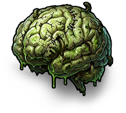

氧化物生存岛
百科全书
物品
战利品
玩法
回收
制作计算器
攻击力
防御力
治疗
威胁
关于
搜索物品...
搜索
语言
中文
English
日本語
한국어
Français
Deutsch
Español
Português
Русский
中文
English
日本語
한국어
Français
Deutsch
Español
Português
Русский
首页
/
其他
/
僵尸脑
分类
其他
僵尸脑
Zombie Brain
物品 · 其他

Zombie Brain / 其他
获取方式
获取方式
暂无已解析获取方式。
物品说明
还在抽搐。食人族商人收这东西出价挺高。